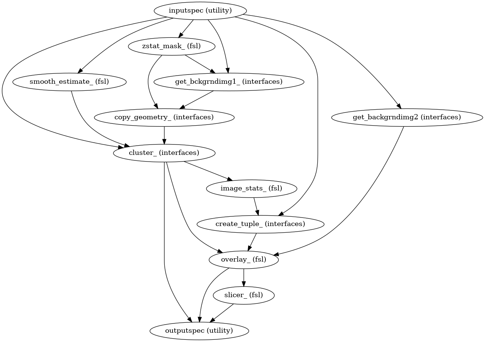

Easy thresh#
- CPAC.easy_thresh.copy_geom(infile_a, infile_b)[source]#
Method to call fsl fslcpgeom command to copy certain parts of the header information (image dimensions, voxel dimensions, voxel dimensions units string, image orientation/origin or qform/sform info) from one image to another
- Parameters
- infile_anifti file
input volume from which the geometry is copied from
- infile_bnifti file
input volume from which the geometry is copied to
- Returns
- out_filenifti file
Input volume infile_b with modified geometry information in the header.
- Raises
- Exception
If fslcpgeom fails
- CPAC.easy_thresh.easy_thresh(wf_name)[source]#
Workflow for carrying out cluster-based thresholding and colour activation overlaying
- Parameters
- wf_namestring
Workflow name
- Returns
- easy_threshobject
Easy thresh workflow object
Notes
Workflow Inputs:
inputspec.z_stats : string (nifti file) z_score stats output for t or f contrast from flameo inputspec.merge_mask : string (nifti file) mask generated from 4D Merged derivative file inputspec.z_threshold : float Z Statistic threshold value for cluster thresholding. It is used to determine what level of activation would be statistically significant. Increasing this will result in higher estimates of required effect. inputspec.p_threshold : float Probability threshold for cluster thresholding. inputspec.paramerters : string (tuple) tuple containing which MNI and FSLDIR path information
Workflow Outputs:
outputspec.cluster_threshold : string (nifti files) the thresholded Z statistic image for each t contrast outputspec.cluster_index : string (nifti files) image of clusters for each t contrast; the values in the clusters are the index numbers as used in the cluster list. outputspec.overlay_threshold : string (nifti files) 3D color rendered stats overlay image for t contrast After reloading this image, use the Statistics Color Rendering GUI to reload the color look-up-table outputspec.overlay_rendered_image : string (nifti files) 2D color rendered stats overlay picture for each t contrast outputspec.cluster_localmax_txt : string (text files) local maxima text file, defines the coordinates of maximum value in the cluster
Order of commands:
Estimate smoothness of the image:
smoothest --mask= merge_mask.nii.gz --zstat=.../flameo/stats/zstat1.nii.gz arguments --mask : brain mask volume --zstat : filename of zstat/zfstat image
Create mask. For details see fslmaths:
fslmaths ../flameo/stats/zstat1.nii.gz -mas merge_mask.nii.gz zstat1_mask.nii.gz arguments -mas : use (following image>0) to mask current image
Copy Geometry image dimensions, voxel dimensions, voxel dimensions units string, image orientation/origin or qform/sform info) from one image to another:
fslcpgeom MNI152_T1_2mm_brain.nii.gz zstat1_mask.nii.gz
Cluster based thresholding. For details see FEAT:
cluster --dlh = 0.0023683100 --in = zstat1_mask.nii.gz --oindex = zstat1_cluster_index.nii.gz --olmax = zstat1_cluster_localmax.txt --othresh = zstat1_cluster_threshold.nii.gz --pthresh = 0.0500000000 --thresh = 2.3000000000 --volume = 197071 arguments --in : filename of input volume --dlh : smoothness estimate = sqrt(det(Lambda)) --oindex : filename for output of cluster index --othresh : filename for output of thresholded image --olmax : filename for output of local maxima text file --volume : number of voxels in the mask --pthresh : p-threshold for clusters --thresh : threshold for input volume
Z statistic image is thresholded to show which voxels or clusters of voxels are activated at a particular significance level. A Z statistic threshold is used to define contiguous clusters. Then each cluster’s estimated significance level (from GRF-theory) is compared with the cluster probability threshold. Significant clusters are then used to mask the original Z statistic image.
Get the maximum intensity value of the output thresholded image. This used is while rendering the Z statistic image:
fslstats zstat1_cluster_threshold.nii.gz -R arguments -R : output <min intensity> <max intensity>
Rendering. For details see FEAT:
overlay 1 0 MNI152_T1_2mm_brain.nii.gz -a zstat1_cluster_threshold.nii.gz 2.30 15.67 zstat1_cluster_threshold_overlay.nii.gz slicer zstat1_cluster_threshold_overlay.nii.gz -L -A 750 zstat1_cluster_threshold_overlay.png
The Z statistic range selected for rendering is automatically calculated by default, to run from red (minimum Z statistic after thresholding) to yellow (maximum Z statistic, here maximum intensity).
High Level Workflow Graph:
Detailed Workflow Graph:

Examples
>>> from CPAC.easy_thresh import easy_thresh >>> preproc = easy_thresh("new_workflow") >>> preproc.inputs.inputspec.z_stats= 'flameo/stats/zstat1.nii.gz' >>> preproc.inputs.inputspec.merge_mask = 'merge_mask/alff_Z_fn2standard_merged_mask.nii.gz' >>> preproc.inputs.inputspec.z_threshold = 2.3 >>> preproc.inputs.inputspec.p_threshold = 0.05 >>> preproc.inputs.inputspec.parameters = ('/usr/local/fsl/', 'MNI152') >>> preporc.run()
{kind=link}
- CPAC.easy_thresh.get_standard_background_img(in_file, file_parameters)[source]#
Method to get the standard brain image from FSL standard data directory
- Parameters
- in_filenifti file
Merged 4D Zmap volume
- file_parameterstuple
Value FSLDIR and MNI from config file
- Returns
- standard_pathstring
Standard FSL Image file path
- Raises
- Exception
If nibabel cannot load the input nifti volume
- CPAC.easy_thresh.get_tuple(infile_a, infile_b)[source]#
Simple method to return tuple of z_threhsold maximum intensity values of Zstatistic image for input to the overlay.
- Parameters
- z_thesholdfloat
z threshold value
- intensity_stattuple of float values
minimum and maximum intensity values
- Returns
- img_min_maxtuple (float)
tuple of zthreshold and maximum intensity value of z statistic image